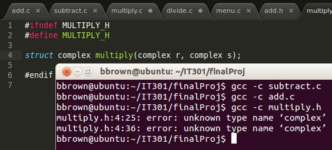
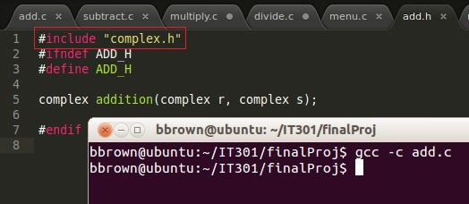
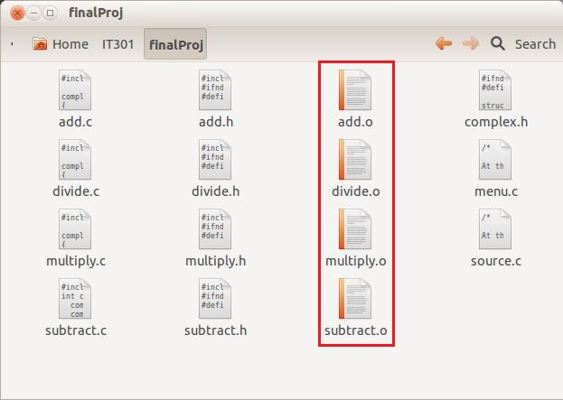
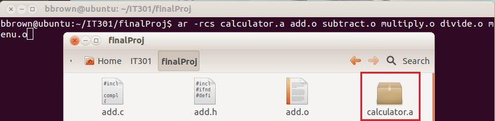
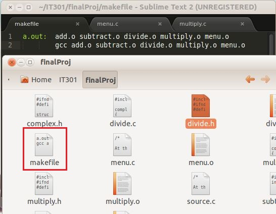
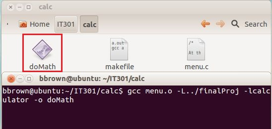
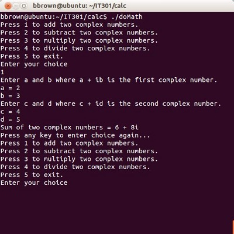
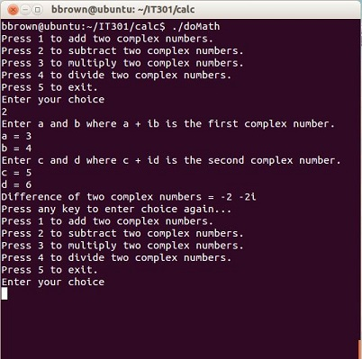
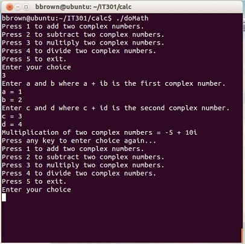

Linking Mathematic Functions to Run a Complex Number Calculator by Ben Brown
Throughout the fall quarter this class introduced many interesting and very challenging topics. In an effort to enjoy a balance of the two for this project, I elected to construct a statically linked library. I found a complex calculator program on the internet here. In order to create a library of files from this one source file, the source file would have to be broken up into C language(.c) and header(.h) files based on the functions performed in the program. The calculator contains a menu, performs addition, subtraction, multiplication, division, and has a 'struct' containing the parameters used by all of the functions performing mathematical operations. I divided the program into .c and .h files based on the sections just described. The .c files contain the function, the function protoype and '#include' the companion .h file (ex. 'add.h' is included at the top of the 'add.c' file). The .h files contain the function prototype as well as 'include' the .h file containing the struct on which all of the functions operate.
My objectives for this project are as follows:
- Divide this complex number calculator into several function-specific files to make editing easier.
- Create object (.o) files as part of a static library.
- Create a makefile and link the separated mathematic functions to perform the same calculator functions as the original source code.
Issues encountered:
- The first issue I ran into was how to establish a basic framework for all of the separate files that I would be linking together.
Given that the calculator would only be handling one type of problem at a time, there was no need for re-inventing the wheel by creating each function
uniquely.
The function prototype to be used by all of the mathematic operations follows:
"operation" is a place holder for the mathematic operation performed (addition, subtraction, multiplication, division).
#include "operation.h"
complex operation(complex r, complex s)
- After establishing the framework and ensuring consistency across all of the files, the next step was to test. I initially jumped
the gun and tried compiling all of the files together without checking them one at a time. Below is a screenshot of just some of the errors encountered
when I attempted to compile all of the files together.
The same problem was consistent across all of the math operation functions. This library of files all depend on a struct in order to
know what type of data types to use for the operations.
struct complex
{
int real; //variable used to handle real numbers.
int img; //variable used to handle imaginary numbers.
};
typedef struct complex complex; // This line defines the 'struct' type
with the word 'complex' eliminating the need to type in 'struct complex' throughout all of the files.
-
-->The issue was resolved by including the 'complex.h' file, containing the 'struct complex' above, in all of the header files
containing the function prototypes of the math operations utilized.
-->Below on the left is a screen shot of the 'multiply.c' file failing to compile. 'complex.h' is not #include'd in 'multiply.h' file, disallowing the
function in 'multiply.c' from identifying the data types being used.
-->The screenshot on the right shows a successful comilation of the 'add.c' file. Notice the '#include "complex.h"' above '#ifndef ADD_H', allowing
'add.c' to identify the data types it is working with to execute the program.


'menu.o' is not visible in the screen shot. This is because I forgot to compile it along with the other files. I compiled it to a .o file prior to
creating the 'calculator.a' library below in item #5.
-
Once 'complex.h' was included in all of the '.h' files, I compiled all of the files to produce the '.o', or object code, files to
begin creating a statically linked library.

-
After creating the object files for the mathematic operations, I archived them into a library titled 'calculator.a'.

-
Following the creation of the file archive, I created a makefile that recreates the calculator.a archive anytime any of the '.c'
math operations files are modified.

-
Next, I created an executable file named 'doMath' to run all of the mathematic operations files linked in 'libcalculator.a'.

-
Once the executable file had been created, I ran several tests ensuring that the operations were running correctly. Below are screenshots of the
complex numbers calculator's performance.


